S(E)OULMATEは、音楽イベントではなく、
カルチャーをつなぐプラットフォームです。
韓国カルチャーとダンスミュージックを軸に、人・音楽・ファッション・アートが交わるコミュニティを育みます。
来場者が新しいカルチャーやクリエイターと出会うだけでなく、日本と韓国のインディーアーティストが互いのシーンへアクセスし、新たな表現やコラボレーションを生み出すきっかけを提供します。
韓国のアーティストには日本で、日本のアーティストには韓国で活動する機会を広げ、国境を越えた継続的なネットワークを築くことで、日韓のカルチャーシーンをともに育てていくことを目指します。
日本と韓国、それぞれのアートシーンを牽引するトップランナーから、世界へ活動の幅を広げようとする次世代のDJ・アーティストまでをボーダレスに招聘します。パーツごとにフォーカスするジャンルを鮮やかに変化させる一連の企画を通し、出演者個々のアイデンティティを緻密に編み込みながら、一夜の壮大なストーリーへと昇華させます。さらに、それぞれのジャンルに最も適したベニューを厳選して開催することで、パーティーごとに全く異なる世界観を提示し、カルチャーが交わる新たなコミュニティと、未知なる音楽との新しい出会いや化学反応を多角的に創出します。
ARTISTS
ARTISTS from SEOUL
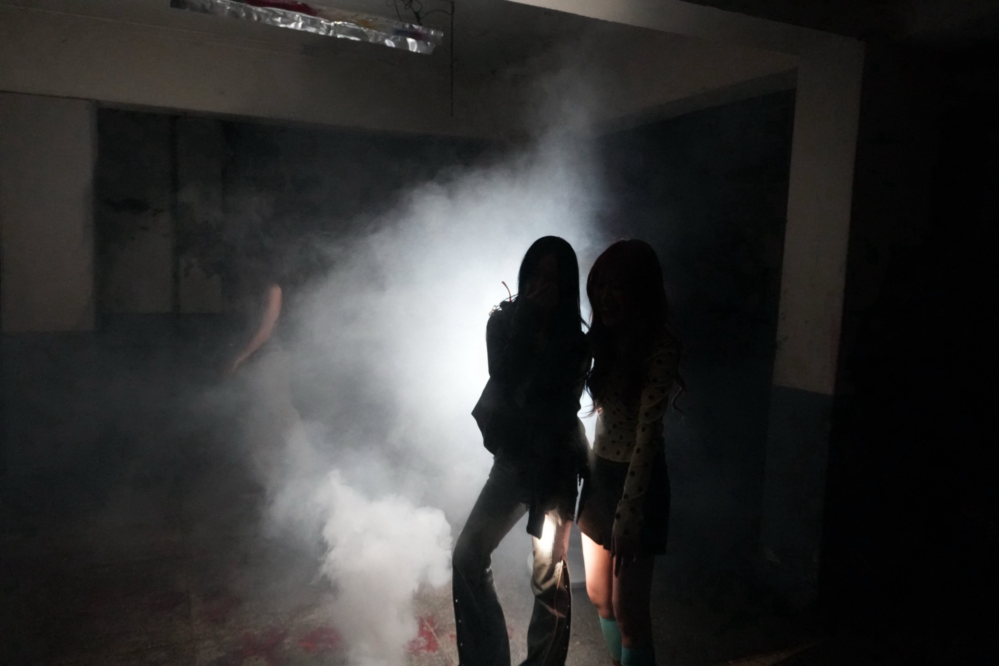
プロデューサーyumetreeとシンガーmemethehouseによる韓国のエレクトロニック・ミュージックユニット。2023年にデビュー。2026年2月にはDrum'n'Bassを軸としたEP『GAME OVER』をリリース。HIPHOPやR&B、House、DnBなど柔軟にトレンドを取り入れたポップな作風が特徴。
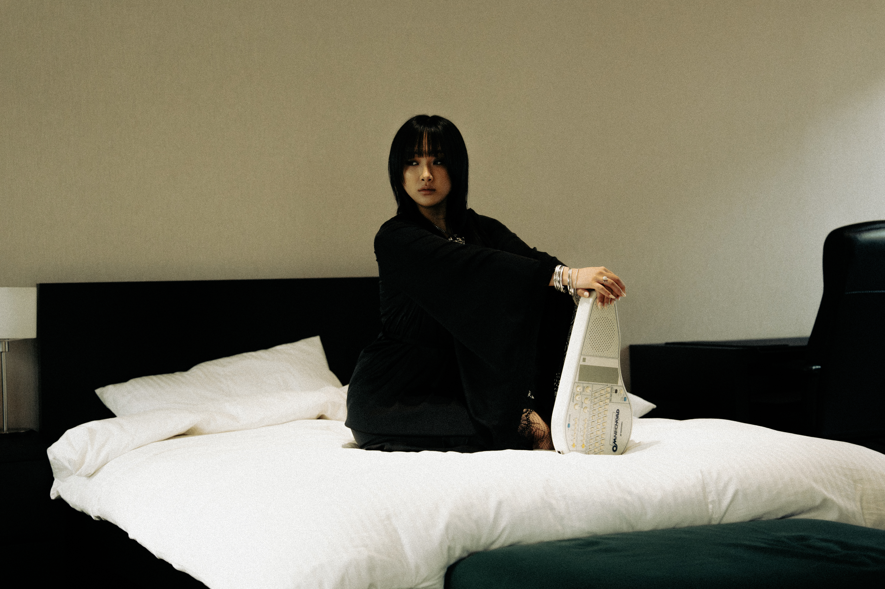
韓国・ソウルを拠点に活動するエレクトロアーティスト。緻密な電子音とクールな歌声の対比が特徴。「エレクトロニックとヒップホップが激しく混ざり合った存在」と自らを定義。EP『Seoul Bizzare』が韓国大衆音楽賞の2部門へノミネートされ、2026年には1stアルバム『GIRLHOOD』をリリース。
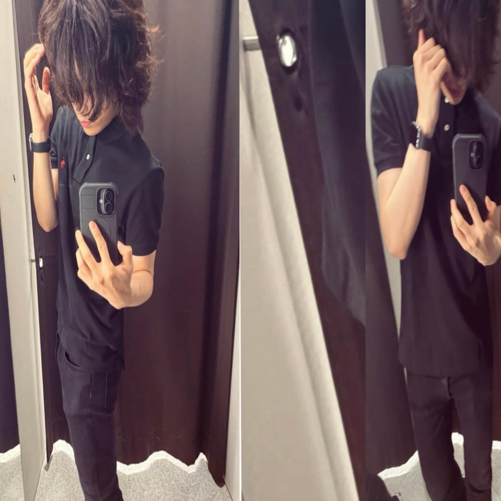
韓国を拠点に活動するラッパー／プロデューサー、raz。混沌や不安定さをエネルギーに変え、Hardcore Rageを軸に、エレクトロニックやオルタナティブなど多様な要素を融合させたサウンドを展開している。ジャンルにとらわれない自由なアプローチと独自のボーカルスタイルが特徴。2026年、シングル「fairytale」のリリースを機に、“RAZYBOYOCEAN”から新たな名義“raz”として本格的に活動をスタート。
ARTISTS from TOKYO
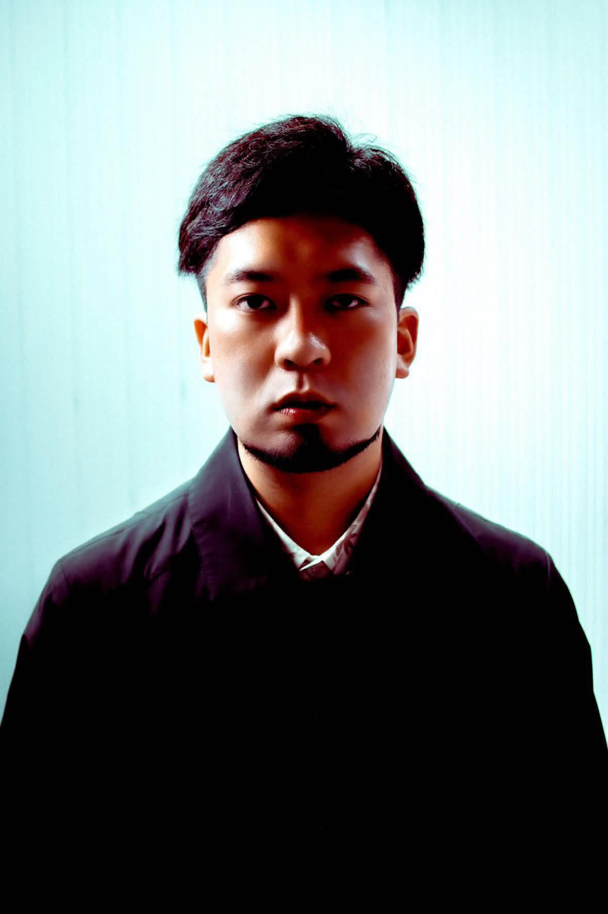
Jazz、Housemusicを軸に様々なジャンルの楽曲を制作。
国内レーベルからのリリース。楽曲提供、リミックス制作など様々な形式で活動中。
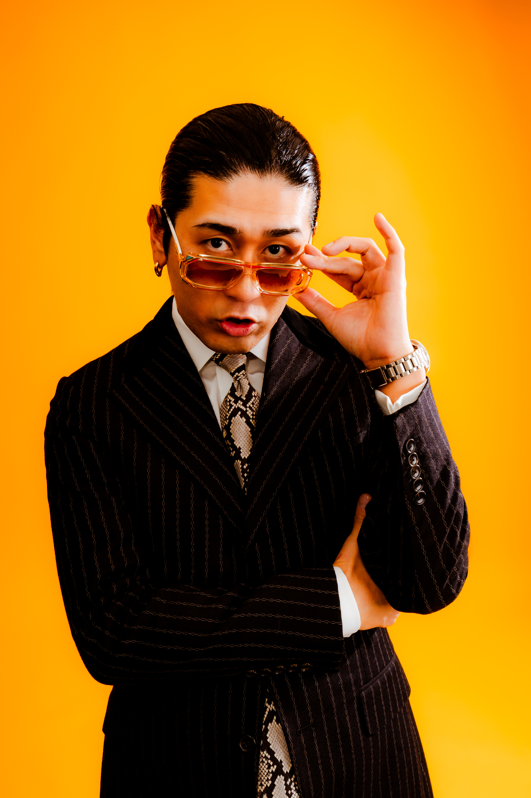
平成元年生まれ。札幌 山鼻出身のDJ / Producer 05年からDJとしての活動を開始。道内外での活動ののち16年に拠点を東京へ移す。
16年、国内老舗ネットレーベルsabacanrecordsから初となるEP「Summer Breeze」をリリース。17年9月に自主レーベル「FRUIT PARLOR」を立ち上げ、18年4月、自身初となるミニアルバム「禁忌」を同レーベルよりリリース。iTunes electronic アルバムチャートにて1位獲得。
全国各地のクラブから、"森、道、市場" "Music Unity" などの音楽フェスへの出演、鞘師里保のLIVEサポートなど、様々な現場で活動中。
また、DJの他にもPARKGOLFとのPodcast「2名」が現在不定期配信中。
DJs
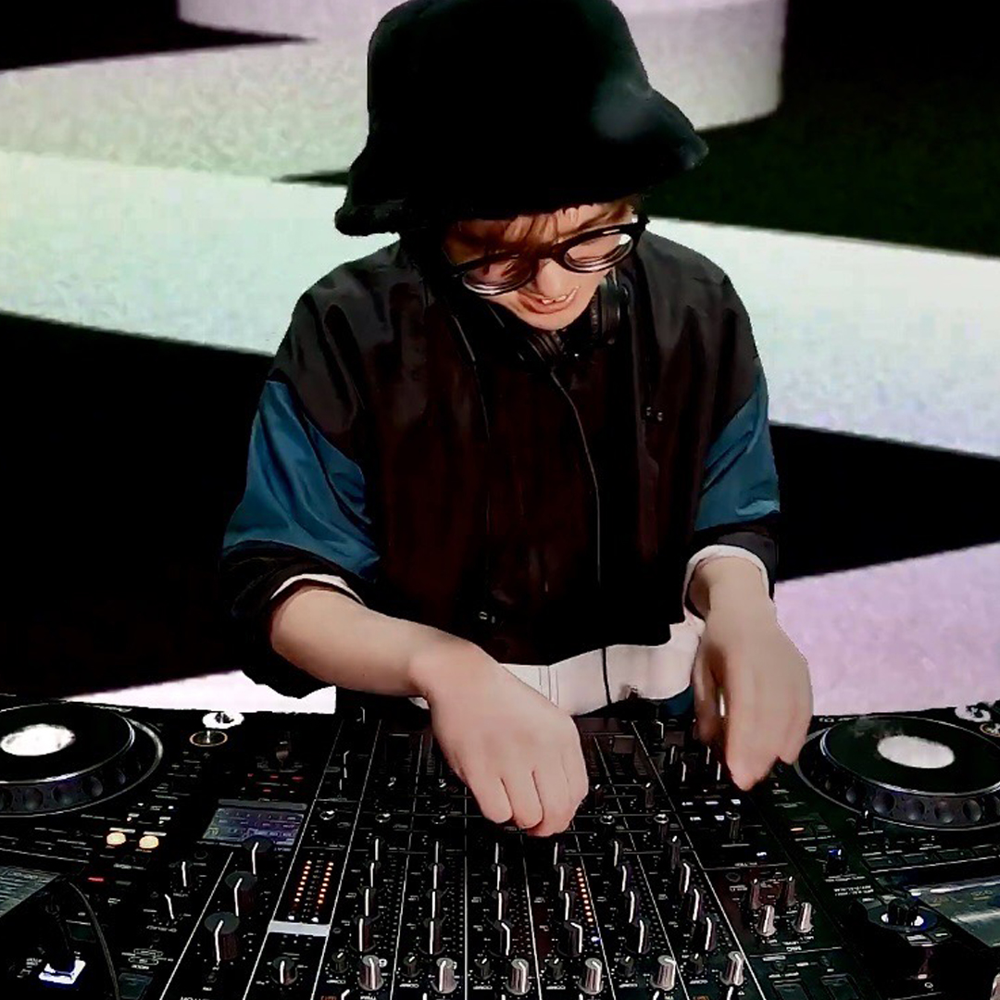
1skr
京都生まれ、DJ、イベント企画者。不定期パーティー・シリーズ『Dialects』を主宰するほか音楽メディア『musit』にて連載企画など。暇さえあれば仁川空港に飛ぶ。
CALYNE
2012年よりDJのキャリアをスタート。国内外のポップミュージックをベースにプレイし、韓国・タイなどグローバルに活動する。
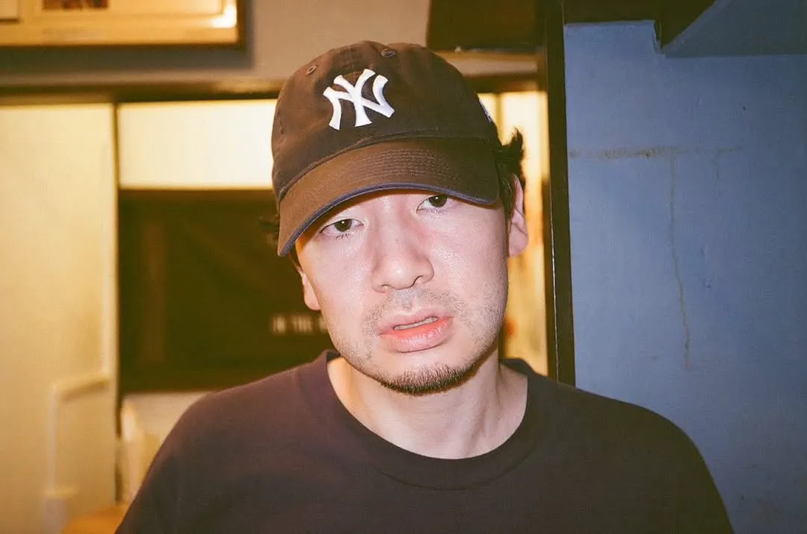
essential_acid
ジャンルを横断しながらグルーヴを最優先に組み立てるDJ。ヒップホップ、UKベース、アマピアノ、ハウスなどを自在に織り交ぜ、フロアの空気を読みながら心地よい高揚感を生み出す。新旧・国内外を問わない選曲と、滑らかでストーリー性のあるミックスで、バーからクラブまで幅広い現場でプレイ。
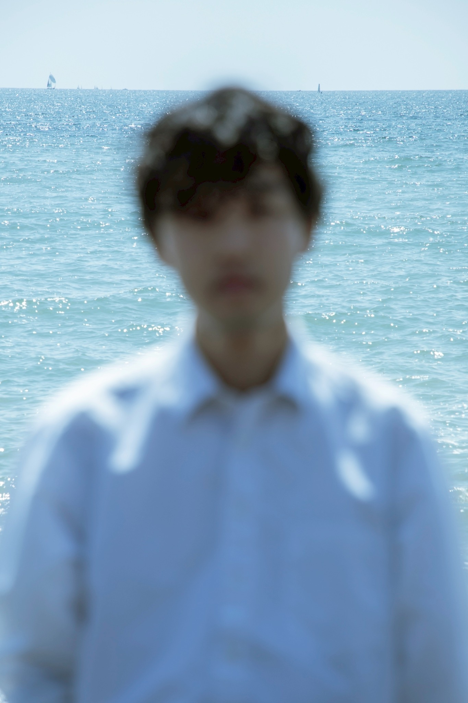
SHORE
2021年DJ活動スタート。DJスタートと同時にK-POPに関心を持ち始め、2023年ごろからK-POPパーティーでもDJ活動をスタート。最新トレンドから往年の名曲、インディーなども混ぜ合わせ独自のグルーヴを追求中。
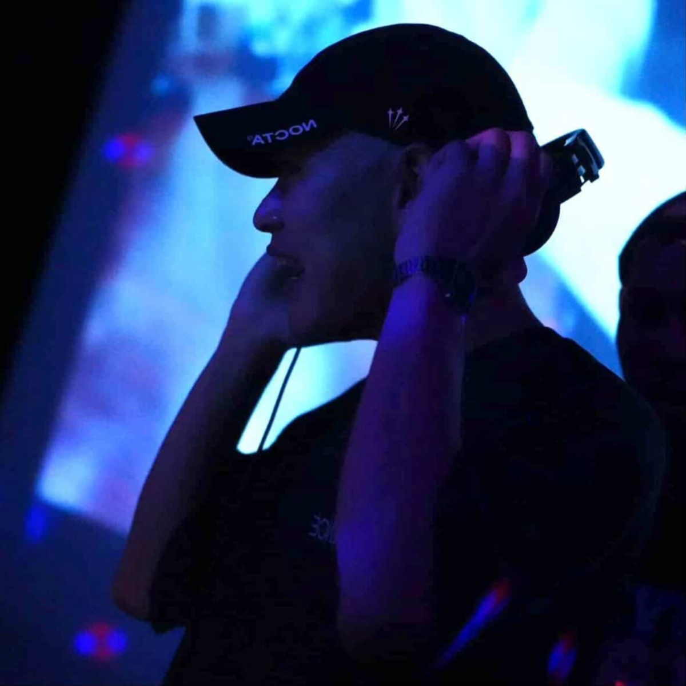
kakigenkin
2023年に雑誌『ユリイカ』に評論「K-POPガールズグループにおけるラッパーの系譜――連鎖し、伝播するシスターフッド」を寄稿し文筆家デビュー。以降、韓国アーティストへのインタビューやアーティスト紹介コラム、ライブレポート、また韓国アーティストの新曲発表に合わせたプレスリリースの作成と配信協力などを継続的に行っている。

Norts
2016年より音楽レーベル立ち上げ・楽曲制作を開始し、ゲーム音楽からPOPSまで幅広く手掛け、現在は会社でも正社員で音楽プロデューサーをしている。2019年にはDJ活動を開始し、国内外での出演やイベントオーガナイズを展開。広告代理店で培ったクリエイティブ・マーケティングの知見を活かしたサポートも行う。
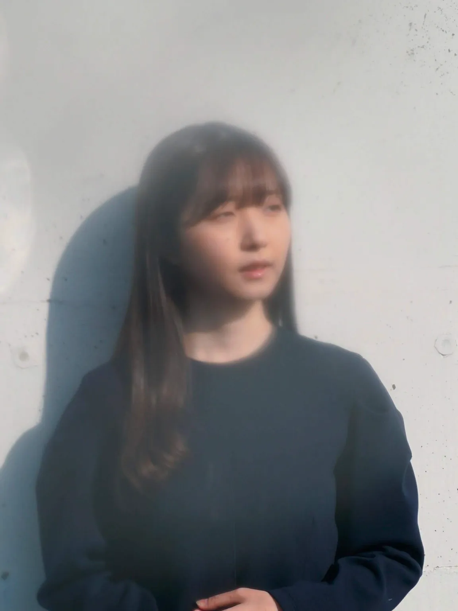
setomai
2025年より東京を拠点にDJ活動を開始。幼少期からストリートダンス、学生時代にはジャズドラムを経験し音楽感覚を培う。R&B、UK Garage、HipHopなどブラックミュージックを軸にKorean Musicも織り交ぜたジャンルレスな選曲を得意とする。また韓国でのDJ出演など日韓の音楽カルチャーを横断する一方、多様な音楽カルチャーを繋ぐParty「Navy Jam」を主催。DJ・イベント企画の両面から活動の幅を広げている。
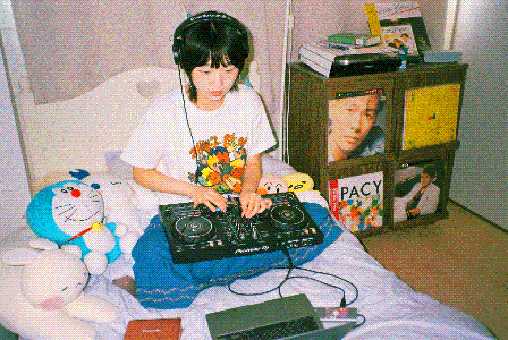
YON
韓国出身、現在は日本を拠点に活動。K-POP、R&B、シティポップ、ディスコなど、時代やジャンル、国を越えたさまざまな音楽をミックス。異なる時代やカルチャーの音楽を自由に組み合わせ、どこか懐かしく、それでいて新鮮に感じられるような、楽しく踊れる空間を作り出す。
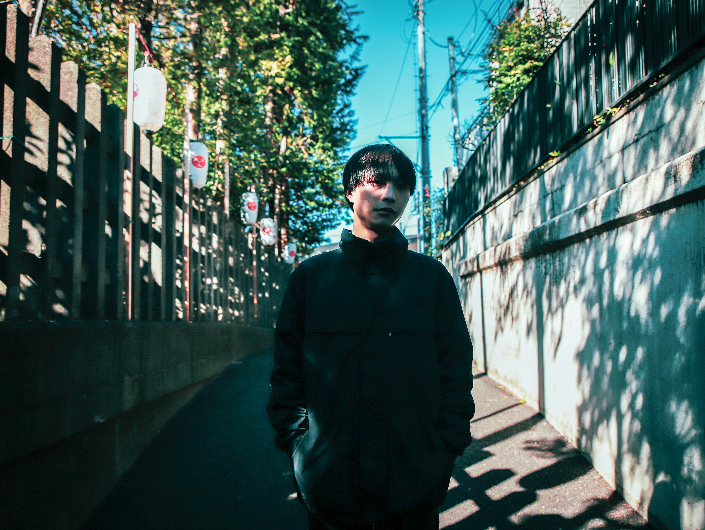
Yuto Kanai
2019年に東京を拠点としてDJをスタート。
現在はハウス/ディスコを中心にプレイ。
2022年、OMOIDE LABELの"JUKEしようや 5"に参加。
2026年、インディーロックバンド Puffのリミックスである"Bad Week (Yuto Kanai Remix) "をリリース。
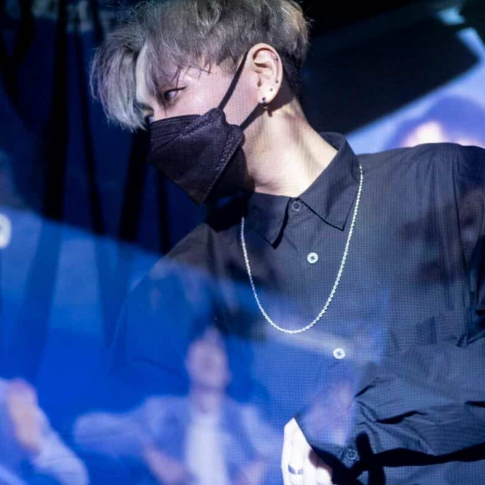
Yu-tan
DJ / Trackmaker / Singer
現在は秋葉原 MOGRA にて定期開催中の「DressingRoom」でレギュラー DJ を担当。アニソンや Vtuber、声優楽曲から K-POP まで、ジャンルを横断してプレイするスタイルで支持を集めており、DJ として日本各地のイベントに出演している。
シンガーとして活動していた時期に聴いた Rain（ピ）をきっかけに K-POP の魅力にはまり、その知識を活かして K-POP DJ としても活動中。
2026年には同じく MOGRA で開催されている K-POP イベント「LiarLiar」にも出演し、K-POP DJ としての活動の幅をさらに広げている。
VENUE & ACCESS
PUBLIC PUBLIC
〒150-0043 東京都渋谷区道玄坂１丁目１３−２ 宝ビル B1
- DATE: 2026.10.24 (SAT)
- OPEN: 23:00 / CLOSE: 05:00
- ADVANCE: ¥3,000 (+1Drink)
- DOOR: ¥3,500 (+1Drink)
RESERVATION
事前に入場予約を承ります。当日受付にてお支払いください。
※20歳未満入場不可。当日は写真付き身分証明書を必ずお持ちください。